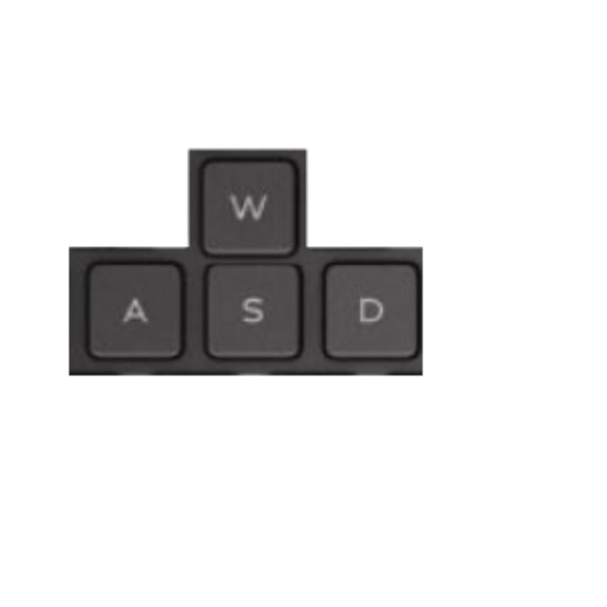

Técnica Especial
Ikki é um dos cavaleiros de bronze de Atenas e considerado o mais forte entre os cem órfãos e irmão protetor de Shun.
Lugar de treinamento: Sul do Oceano Pacífico, Ilha da Rainha da Morte
Ave Fênix: Jogando seu oponente ao ar dá um golpe digno e fulminante da fênix.
Pular
Andar
Andar